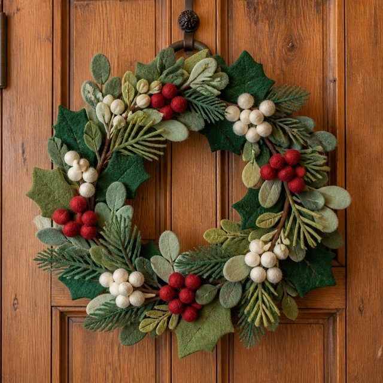
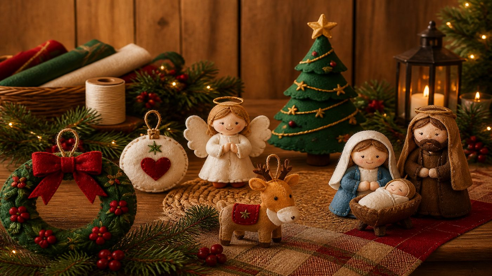
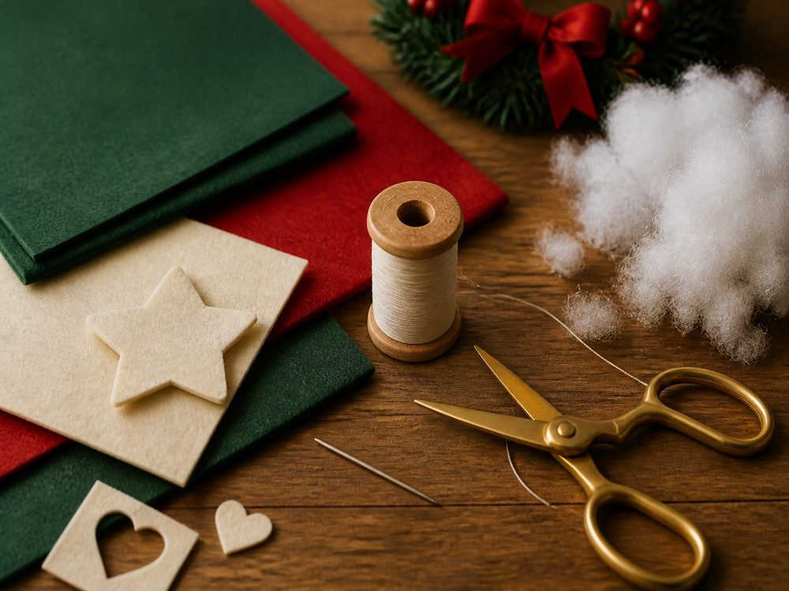
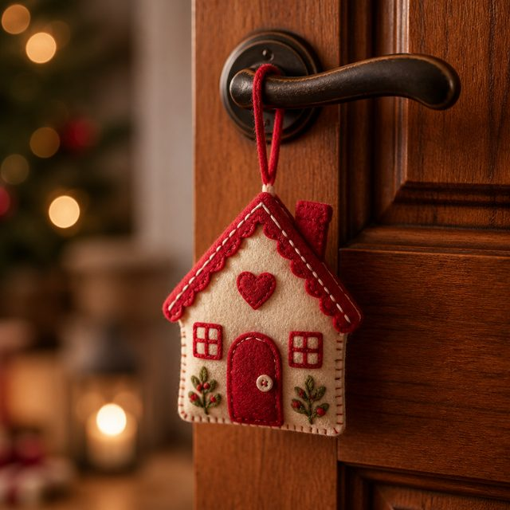
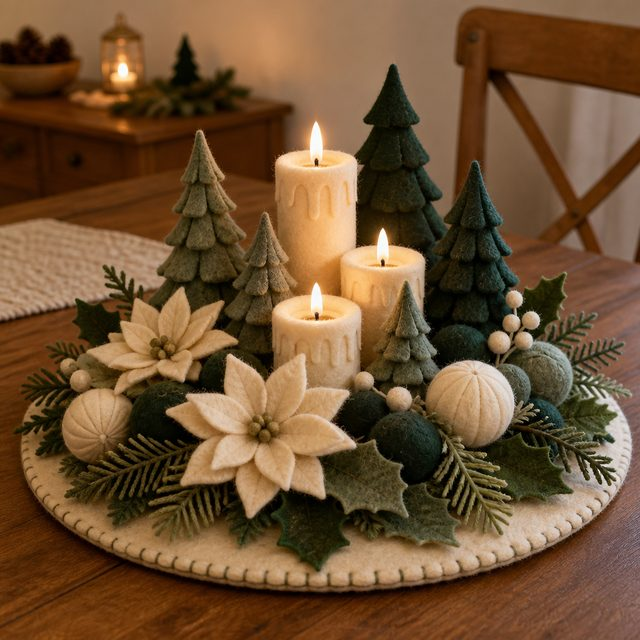
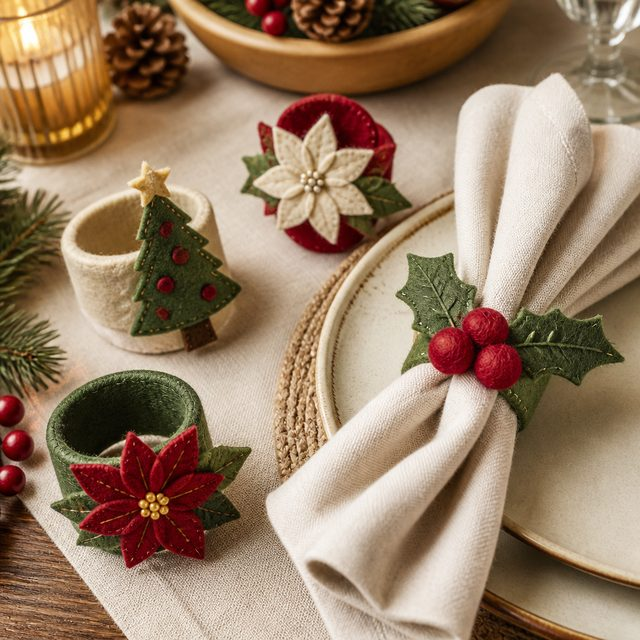
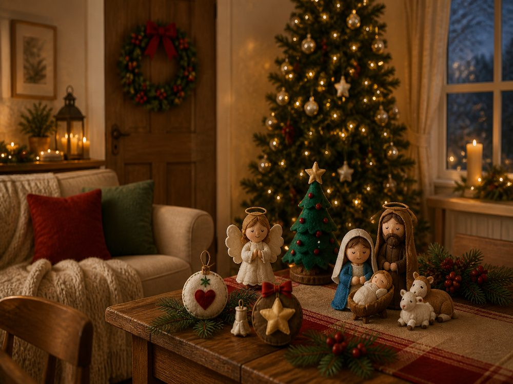

Guirlanda de Natal
Para receber o Natal já na porta.

Seu presépio já está garantido ✓
Use os mesmos materiais e o mesmo tipo de costura para criar outras peças de Natal para a sua casa.
Mais Natal feito por você ♡
Adicionar ao meu pedido
Pagamento único · Acesso digital
Feltro.
Linha.
Enchimento.
Tesoura.
Agulha.
Depois de montar o presépio, você já conhece o tipo de material e o jeito de trabalhar. A Coleção Natal Feito à Mão aproveita esse mesmo momento para você criar outras peças e espalhar o feito à mão pela casa.


Para receber o Natal já na porta.
Uma peça pequena para aparador, mesa ou cantinho especial.

Um detalhe feito à mão logo na entrada.

Para levar o clima do Natal para a mesa.

Detalhes em feltro para acompanhar a ceia.
Peças pequenas que também podem virar lembranças de Natal.
A ideia é simples: imprimir, fazer e colocar no lugar ♡
Uma guirlanda na porta.
Uma peça na mesa.
Um detalhe perto da árvore.
Tudo seguindo o mesmo clima artesanal que começou com o seu presépio.

Oferta especial após sua compra
Pagamento único
Adicionar ao meu pedido agora
Pedido seguro. Seu acesso será liberado junto com o produto principal.
Não, obrigada. Quero somente meu presépio.
Obrigada por fazer parte desse Natal ♡